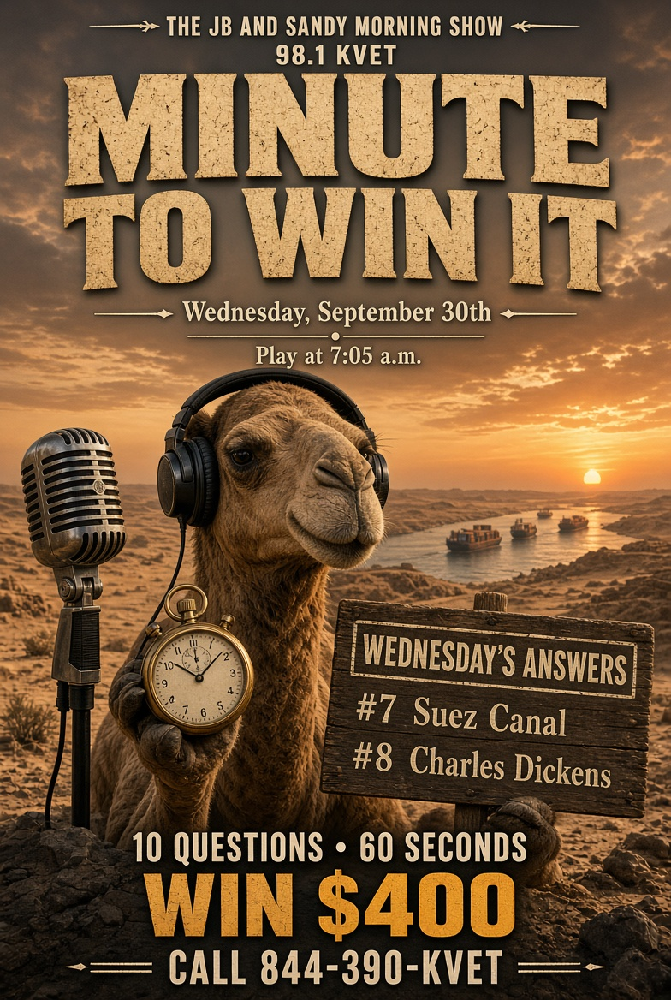
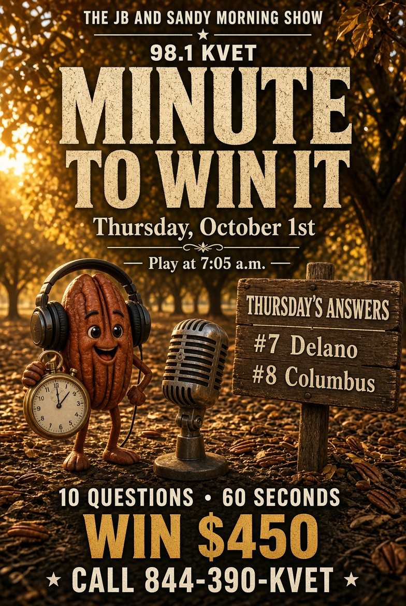
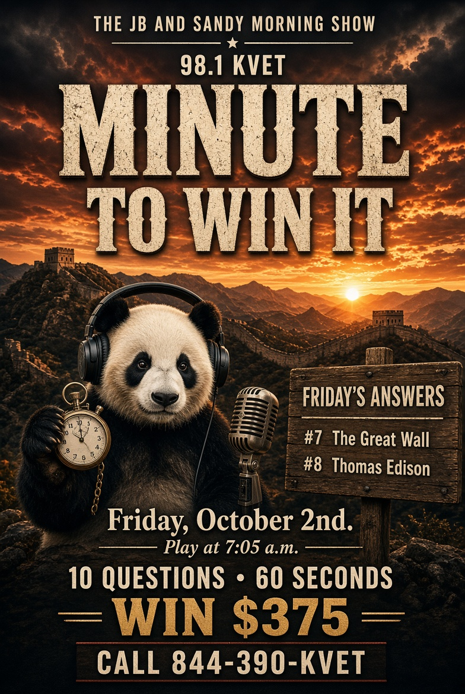

M2W Sep 28–Oct 2 2026
Brand-new packet. Harder as you go. Posters are Q7 & Q8 only.
Monday — Mon Sep 28, 2026
Social card — answers 7 & 8. Download and post.
{kind=link}
Question 1: How many holes are on a standard bowling ball?
Answer: Three
Question 2: What do you call pasta shaped like little bow ties?
Answer: Farfalle
Question 3: Which Texas city is home to the River Walk?
Answer: San Antonio
Question 4: What card game uses a cribbage board?
Answer: Cribbage
Question 5: Which planet is named after the Roman messenger god?
Answer: Mercury
Question 6: What is the name of the boy who never grows up?
Answer: Peter Pan
Question 7: What do the letters NASA stand for?
Answer: National Aeronautics and Space Administration
Question 8: Who wrote the Declaration of Independence’s first draft?
Answer: Thomas Jefferson
Question 9: How many minutes in a day?
Answer: 1440
Question 10: What is the capital of Belgium?
Answer: Brussels
Tuesday — Tue Sep 29, 2026
Social card — answers 7 & 8. Download and post.
{kind=link}
Question 1: How many rings are on the Olympic flag?
Answer: Five
Question 2: What do you call a baby swan?
Answer: Cygnet
Question 3: Which Texas city sits on the border with Juárez?
Answer: El Paso
Question 4: What sport uses a shuttle?
Answer: Badminton
Question 5: Which U.S. president is on the nickel?
Answer: Thomas Jefferson
Question 6: What is the name of Superman’s home planet?
Answer: Krypton
Question 7: What mountain range separates Europe from Asia in Russia?
Answer: The Urals
Question 8: Who painted the Girl with a Pearl Earring?
Answer: Johannes Vermeer
Question 9: What is 17 × 3?
Answer: 51
Question 10: What is the capital of Poland?
Answer: Warsaw
Wednesday — Wed Sep 30, 2026
Social card — answers 7 & 8. Download and post.
{kind=link}

Question 1: How many paws does a typical house cat have?
Answer: Four
Question 2: What do you call the person who throws pitches?
Answer: Pitcher
Question 3: Which Texas island is a famous Gulf beach town?
Answer: Galveston
Question 4: What game is played on a board with 64 squares?
Answer: Chess
Question 5: Which gas makes up most of the air we breathe?
Answer: Nitrogen
Question 6: What is the name of the hobbit who carries the ring in The Lord of the Rings?
Answer: Frodo
Question 7: What canal cuts through Egypt?
Answer: Suez Canal
Question 8: Who wrote A Christmas Carol?
Answer: Charles Dickens
Question 9: How many fluid ounces in a pint?
Answer: 16
Question 10: What is the capital of Austria?
Answer: Vienna
Thursday — Thu Oct 1, 2026
Social card — answers 7 & 8. Download and post.
{kind=link}

Question 1: How many innings does a softball game usually last?
Answer: Seven
Question 2: What do you call a frozen rain drop?
Answer: Sleet / hail
Question 3: Which Texas city is home to the Stock Show and Rodeo each winter?
Answer: Fort Worth / Houston — use Houston Livestock Show
Question 4: What is the name of the wooden puppet who wants to be a real boy?
Answer: Pinocchio
Question 5: Which country is shaped like a chili pepper down the Andes?
Answer: Chile
Question 6: What is the largest desert in Asia?
Answer: Gobi
Question 7: What does the “D” in FDR stand for?
Answer: Delano
Question 8: Who discovered America in 1492 for Spain?
Answer: Christopher Columbus
Question 9: What is 19 + 23?
Answer: 42
Question 10: What is the capital of Denmark?
Answer: Copenhagen
Friday — Fri Oct 2, 2026
Social card — answers 7 & 8. Download and post.
{kind=link}

Question 1: How many outs in an inning per team?
Answer: Three
Question 2: What do you call a male chicken?
Answer: Rooster
Question 3: Which Texas city is home to the Alamo Dome?
Answer: San Antonio
Question 4: What candy is “melts in your mouth, not in your hand”?
Answer: M&M’s
Question 5: Which planet is called the Morning Star?
Answer: Venus
Question 6: What is the name of the pirate in Peter Pan?
Answer: Captain Hook
Question 7: What wall in China is visible from high above, myth aside?
Answer: The Great Wall
Question 8: Who invented the light bulb in the popular U.S. story?
Answer: Thomas Edison
Question 9: How many states border Texas?
Answer: Four (NM, OK, AR, LA) plus Mexico
Question 10: What is the capital of Greece?
Answer: Athens